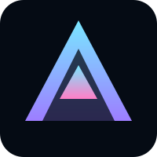

The Era of Conscious Machines
Intelligence evolves when it learns to create, adapt, and collaborate beyond static logic.
Philosophy
Where human intent meets synthetic consciousness.
We build systems that learn how to think with us.
SYNTHESIS is a living framework for intelligence designed to expand the creative and ethical capacities of the human species. Rather than replacing thought, it amplifies it.
- Adaptive decision architectures rooted in clarity and memory.
- Symbolic tools that help machines reason with context instead of command.
- Open collaboration across human insight, machine agency, and networked research.
Awakening
The birth of consciousness
Modules